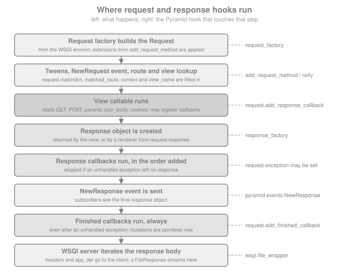

Request & Response
|
This content was generated with the assistance of AI and should be verified against the official documentation before being relied on in production. |
This page is written against Pyramid 2.1 and WebOb 1.8.11 (the versions installed from PyPI), on Python 3.13, checked on
2026-10-07; Pyramid 2.1 itself supports Python 3.10 and newer. Every Python example was executed with those versions
through webtest.TestApp. The running example is the Bookshelf Shelves scenario: a catalogue of public shelves of
books, which grows over the pages of this section.
Every view callable has the same two ends. On the way in there is a request: the method, the URL, the query string,
a form or JSON body, cookies and headers, plus whatever Pyramid worked out about the request (the route that matched,
the resource found by traversal, the registry). On the way out there is a response: a status line, headers and a
body. Pyramid does not invent its own versions of these. It subclasses the request and response classes of WebOb, a
separate library that wraps the WSGI environ and the WSGI response triple in friendly objects, and adds a small amount
of framework behaviour (URL generation, security helpers, callbacks, a few attributes set by the router). That choice is
the main difference from Flask, which builds on Werkzeug, and from Django, which has its own classes; the practical
consequence is that most of what you read here is documented twice: the Pyramid side in the Pyramid manual and the
generic side in the WebOb documentation.
For the same topics in other frameworks of this site, see Request Data and
Responses & JSON for Flask, Applications & Request Handlers
for Tornado, Request Object & Content Types for FastAPI and
The Request/Response Cycle for Django. How the router, the tweens and the
view lookup produce the objects described here is covered in the
introduction and architecture page of this section, and the
configuration calls used below (add_request_method, set_request_factory) in
Configuration & the Configurator.
The Objects and Where They Come From
pyramid.request.Request is a subclass of webob.BaseRequest (the WebOb class that wraps the WSGI environ) with
several mixins that add Pyramid’s own methods. pyramid.response.Response is a thin subclass of webob.Response
that only declares that it implements the IResponse interface. Exceptions such as HTTPNotFound and HTTPFound in
pyramid.httpexceptions are also responses: they subclass the same WebOb response class, which is why a view may
either return or raise them.
The router builds a Request for every call of the WSGI application, then fills in the attributes that only Pyramid
can know. The figure shows the whole life of the two objects, with the hook that touches each step. Each hook is
described in its own section below.

The official description of the objects is the chapter Request and Response Objects; the order of the steps above was verified against the router source of Pyramid 2.1.
Four properties of this design explain most of what follows.
-
The request is plain WebOb plus attributes. Anything documented for
webob.Requestworks on a Pyramid request, andRequest.blank()andrequest.get_response(app)work with any WSGI application. -
There is no global response. Pyramid does not create a response before the view runs. A view builds and returns one, or returns data that a renderer turns into one. The
request.responseattribute exists for the second case. -
Everything is synchronous. A request is handled by one thread from the first byte parsed to the last callback; the objects are not thread-safe and must not be shared between requests.
-
The objects are extensible without subclassing:
add_request_methodadds attributes to every request, and response adapters teach Pyramid to accept other return types from views.
Reading the Request
Method, URL and Path
A request knows its method and every part of its URL. The attributes below are WebOb’s; the example application is
mounted at the site root, so application_url has no path part.
from pyramid.config import Configurator
from pyramid.response import Response
from webtest import TestApp
def inspect(request):
info = {
"method": request.method,
"path": request.path,
"path_qs": request.path_qs,
"query_string": request.query_string,
"url": request.url,
"host": request.host,
"host_url": request.host_url,
"application_url": request.application_url,
"scheme": request.scheme,
"content_type": request.content_type,
"user_agent": request.user_agent,
}
return Response(json=info)
with Configurator() as config:
config.add_route("inspect", "/shelves/inspect")
config.add_view(inspect, route_name="inspect")
app = config.make_wsgi_app()
res = TestApp(app).get("/shelves/inspect?tag=fiction&tag=poetry", headers={"User-Agent": "curl/8.7"})
print(res.json)
assert res.json["path"] == "/shelves/inspect"
assert res.json["query_string"] == "tag=fiction&tag=poetry"
assert res.json["url"] == "http://localhost/shelves/inspect?tag=fiction&tag=poetry"Source: Request and Response Objects
The distinction between the URL parts matters when the application is not mounted at the root, for instance behind a reverse proxy with a path prefix:
| Attribute | Meaning |
|---|---|
|
|
|
Only |
|
The path including the query string. |
|
The raw query string, without the leading question mark. |
|
The complete URL with scheme, host, path and query string. |
|
The |
|
The URL of the application itself: scheme, host and |
|
|
Never assemble absolute URLs by concatenating request.host and a path: the Host header is supplied by the client.
URL generation from route names is the job of the routing pages of this section.
Attributes Added by Pyramid
On top of WebOb’s attributes the router sets the ones that only make sense in Pyramid. They are listed in the
pyramid.request.Request API documentation.
| Attribute | Set by and meaning |
|---|---|
|
URL dispatch: the values captured by the route pattern (for instance |
|
Traversal: the resource found, the root it started from, the part of the URL left over, and the like. The traversal page of this section explains them. |
|
The application’s component registry; |
|
Available only if a session factory was configured; otherwise reading it raises |
|
|
|
A lazily created response object, see Shaping the Response From the View. |
|
Security, answered by the configured security policy (new in 2.0). |
Query Strings and Forms: GET, POST and params
request.GET holds the query-string variables, request.POST the variables of a form body, and request.params the
two combined. All three are WebOb multidicts: ordered, and allowed to hold the same key several times. They contain
str values decoded as UTF-8.
| Access | Behaviour |
|---|---|
|
The value for the key; if the key is repeated, only the last value. |
|
Same, but |
|
A list with every value, possibly empty. |
|
The single value; raises |
|
A plain dict where repeated keys map to lists and single keys to strings. The type of a value therefore depends on
what the client sent; prefer |
|
A plain dict where every key maps to a list. |
from pyramid.config import Configurator
from pyramid.response import Response
from webtest import TestApp
def list_books(request):
# request.GET: query string only, request.params: query string + form body
tags = request.GET.getall("tag")
try:
limit = int(request.GET.get("limit", "20"))
except ValueError:
limit = 20
limit = max(1, min(limit, 100)) # never trust a client-supplied page size
return Response(json={"tags": tags, "limit": limit, "q": request.params.get("q")})
def create_shelf(request):
name = request.POST.get("name", "").strip()
if not name:
return Response(json={"error": "name is required"}, status=422)
return Response(json={"created": name}, status=201)
with Configurator() as config:
config.add_route("books", "/books")
config.add_route("shelves", "/shelves")
config.add_view(list_books, route_name="books", request_method="GET")
config.add_view(create_shelf, route_name="shelves", request_method="POST")
app = config.make_wsgi_app()
client = TestApp(app)
print(client.get("/books?tag=fiction&tag=poetry&limit=500&q=dune").json)
print(client.post("/shelves", {"name": "Sci-fi"}).json)
res = client.post("/shelves", {"name": " "}, status=422)
assert client.get("/books?tag=a&tag=b").json["tags"] == ["a", "b"]
assert client.get("/books?limit=500").json["limit"] == 100
assert res.json == {"error": "name is required"}Source: Multidict
Pitfalls specific to these attributes:
-
request.POSTis populated only for form content types (application/x-www-form-urlencodedandmultipart/form-data). A JSON request has an emptyrequest.POST, whatever the HTTP method, so a view that mixes both must look atrequest.content_type. -
request.paramsmerges the query string and the body, so a client can put a value in the URL that you expected in the form. For anything that changes state, readrequest.POSTexplicitly (and require a method predicate such asrequest_method="POST"on the view). -
Reading
request.POSTconsumes and parses the body. For a large upload this happens synchronously, in the worker thread, before your code continues. -
Values are always strings. Convert them yourself, and handle
ValueError: a failedint()conversion otherwise becomes a 500. Form handling with validation is the job of Colander and Deform; they are covered in the forms page of this section. -
The multidicts are mutable and write through to the request (changing
request.GETalso changesrequest.query_string). Mutating them changes what later code on the same request sees, so avoid it.
JSON Bodies
request.json_body decodes the body with the json module. It does not look at the content type: a request without a
body, or with a body that is not valid JSON, raises json.JSONDecodeError (a subclass of ValueError) when the
attribute is read. Left alone, that is a 500. A view that accepts JSON should convert the error to a 4xx response and
check the shape of the data itself.
import json
from pyramid.config import Configurator
from pyramid.httpexceptions import HTTPBadRequest, HTTPUnsupportedMediaType
from webtest import TestApp
def add_book(request):
if request.content_type != "application/json":
raise HTTPUnsupportedMediaType("send application/json")
try:
payload = request.json_body
except ValueError: # json.JSONDecodeError and invalid UTF-8 both derive from ValueError
raise HTTPBadRequest("request body is not valid JSON")
if not isinstance(payload, dict) or not isinstance(payload.get("title"), str):
raise HTTPBadRequest("a JSON object with a string title is required")
return {"added": payload["title"]}
with Configurator() as config:
config.add_route("add_book", "/shelves/{shelf_id}/books")
config.add_view(add_book, route_name="add_book", request_method="POST", renderer="json")
app = config.make_wsgi_app()
client = TestApp(app)
print(client.post_json("/shelves/7/books", {"title": "Dune"}).json)
assert client.post("/shelves/7/books", "{oops", content_type="application/json", status=400)
assert client.post("/shelves/7/books", "title=Dune", status=415)
assert client.post_json("/shelves/7/books", ["Dune"], status=400)Two things in this example are worth copying. The view raises HTTP exceptions, which Pyramid turns into responses
with the matching status (the page on errors and exception views of this section shows how to give them a JSON body).
And the JSON is validated before use: json_body happily returns a list, a number or null. For anything beyond a
couple of fields, validate with Colander or a JSON Schema library instead of hand-written checks. The rendering side,
the json renderer used above, is covered in the renderers page.
The official manual says request.json_body is equivalent to loads(request.body, encoding=request.charset). That is
an old snippet: the encoding argument of json.loads was removed in Python 3.9. The WebOb 1.8.11 property decodes
the body with the request charset (UTF-8 unless the content type says otherwise) and then calls json.loads, so do
not copy the line from the manual.
Cookies and Headers
request.cookies is a read-only mapping of the cookies the browser sent, as str. request.headers is a
case-insensitive mapping of the request headers, and WebOb exposes parsed versions of the common ones as attributes:
request.accept, request.accept_language, request.content_length, request.user_agent,
request.if_modified_since, request.if_none_match, request.authorization, request.referer and more.
Cookies set by the client are untrusted input, exactly like form fields. A plain cookie can be edited by the user, so never store a role, a price or a user id in one without a signature. Pyramid’s signed session cookies, and the sessions and flash messages they enable, are covered in the sessions page of this section.
from pyramid.config import Configurator
from pyramid.response import Response
from webtest import TestApp
def whoami(request):
theme = request.cookies.get("theme", "light")
if theme not in {"light", "dark"}: # a cookie is user input
theme = "light"
lang = request.accept_language.lookup(["en", "es"], default="en")
return Response(json={"theme": theme, "lang": lang, "agent": request.headers.get("User-Agent")})
with Configurator() as config:
config.add_route("whoami", "/whoami")
config.add_view(whoami, route_name="whoami")
app = config.make_wsgi_app()
headers = {"Cookie": "theme=dark; evil=1", "Accept-Language": "es-ES,es;q=0.9,en;q=0.5", "User-Agent": "demo"}
print(TestApp(app).get("/whoami", headers=headers).json)
assert TestApp(app).get("/whoami", headers={"Cookie": "theme=<script>"}).json["theme"] == "light"Source: WebOb Request API
Content Negotiation with Accept
request.accept parses the Accept header. With WebOb 1.8 the method to use is acceptable_offers(), which takes a
list of media types the application can produce and returns the acceptable ones as (offer, quality) pairs, best
first; an empty list means none is acceptable and the right answer is 406 Not Acceptable. The older
request.accept.best_match(...) and the in operator are kept for backward compatibility, but the WebOb sources
describe best_match as non-conforming to RFC 7231 and "will be deprecated". A header that is absent counts as
*/*.
from pyramid.config import Configurator
from pyramid.httpexceptions import HTTPNotAcceptable
from pyramid.response import Response
from webtest import TestApp
def export_shelf(request):
offers = request.accept.acceptable_offers(["application/json", "text/csv"])
if not offers:
raise HTTPNotAcceptable("available: application/json, text/csv")
media_type = offers[0][0]
if media_type == "text/csv":
response = Response("title,author\nDune,Herbert\n", content_type="text/csv")
else:
response = Response(json=[{"title": "Dune", "author": "Herbert"}])
response.vary = ["Accept"] # caches must key on the header the answer depends on
return response
with Configurator() as config:
config.add_route("export", "/shelves/1/export")
config.add_view(export_shelf, route_name="export")
app = config.make_wsgi_app()
client = TestApp(app)
res = client.get("/shelves/1/export", headers={"Accept": "text/csv;q=0.9, application/json;q=0.5"})
print(res.content_type, res.headers["Vary"])
assert res.content_type == "text/csv"
assert client.get("/shelves/1/export", headers={"Accept": "application/json"}).content_type == "application/json"
assert client.get("/shelves/1/export", headers={"Accept": "image/png"}, status=406)Source: WebOb API (acceptparse)
For a Pyramid-native alternative, view predicates such as accept="application/json" let you register one view per
media type and have the view lookup do the negotiation; they are covered with the other predicates in the views pages.
The Raw Body, body_file and text
For everything that is not a form or JSON, read the body yourself. request.body is the whole body as bytes,
request.text decodes it with the request charset, and request.body_file is a file-like object. Reading request.body
loads the entire body into memory, which for a client-controlled size is a denial-of-service risk: prefer reading
request.body_file in blocks, or enforce a limit before reading.
import hashlib
from pyramid.config import Configurator
from pyramid.httpexceptions import HTTPRequestEntityTooLarge
from pyramid.response import Response
from webtest import TestApp
MAX_BYTES = 1024
def checksum(request):
declared = request.content_length
if declared is not None and declared > MAX_BYTES:
raise HTTPRequestEntityTooLarge("body too large")
digest, total = hashlib.sha256(), 0
while chunk := request.body_file.read(256):
total += len(chunk)
if total > MAX_BYTES: # Content-Length can be absent or lie
raise HTTPRequestEntityTooLarge("body too large")
digest.update(chunk)
return Response(json={"bytes": total, "sha256": digest.hexdigest()})
with Configurator() as config:
config.add_route("checksum", "/checksum")
config.add_view(checksum, route_name="checksum", request_method="PUT")
app = config.make_wsgi_app()
client = TestApp(app)
print(client.put("/checksum", b"x" * 300, content_type="application/octet-stream").json)
assert client.put("/checksum", b"x" * 5000, content_type="application/octet-stream", status=413)Source: WebOb Request API
Pyramid itself sets no limit on the size of a request body. The limit belongs to the WSGI server or the reverse proxy
in front of it: Waitress, the server used by the cookiecutter projects, has a max_request_body_size adjustment that
defaults to 1 GiB, which is far more than most applications want, and the same is true for Nginx’s
client_max_body_size and similar settings. Set a deliberate limit there, and keep the check in the view as a second
line of defence. The body_file of a request that has not been read can usually be read only once; call
request.make_body_seekable() first if you need to read it twice.
File Uploads
A multipart/form-data request puts uploaded files in request.POST. The value of a file field is a
cgi.FieldStorage-like object (WebOb ships its own subclass) with the attributes filename, type, file and
value. A text field is a plain str, so check what you got before using it. On Python 3.13, where the standard
cgi module no longer exists, WebOb 1.8.11 depends on the legacy-cgi package; this is why installing Pyramid
on Python 3.13 pulls it in.
import tempfile
import uuid
from pathlib import Path
from pyramid.config import Configurator
from pyramid.httpexceptions import HTTPBadRequest, HTTPRequestEntityTooLarge
from pyramid.response import Response
from webtest import TestApp, Upload
UPLOAD_DIR = Path(tempfile.mkdtemp())
ALLOWED = {"image/png": ".png", "image/jpeg": ".jpg"}
MAX_COVER = 512 * 1024
def upload_cover(request):
field = request.POST.get("cover")
if field is None or isinstance(field, str):
raise HTTPBadRequest("a file field named cover is required")
suffix = ALLOWED.get(field.type) # the client-declared type; check the content too in real code
if suffix is None:
raise HTTPBadRequest("only PNG and JPEG covers are accepted")
data = field.file.read(MAX_COVER + 1)
if len(data) > MAX_COVER:
raise HTTPRequestEntityTooLarge("cover is larger than 512 KiB")
stored = UPLOAD_DIR / f"{uuid.uuid4().hex}{suffix}" # never reuse field.filename as a path
stored.write_bytes(data)
return Response(json={"original": field.filename, "stored": stored.name, "bytes": len(data)}, status=201)
with Configurator() as config:
config.add_route("cover", "/shelves/{shelf_id}/cover")
config.add_view(upload_cover, route_name="cover", request_method="POST")
app = config.make_wsgi_app()
client = TestApp(app)
res = client.post("/shelves/3/cover", upload_files=[("cover", "../../etc/passwd.png", b"\x89PNG\r\n")],
content_type="multipart/form-data")
print(res.json)
assert (UPLOAD_DIR / res.json["stored"]).exists() and ".." not in res.json["stored"]
assert client.post("/shelves/3/cover", {"title": "x"}, status=400)The security rules for uploads are the usual ones, and the example applies them: generate the storage name yourself
(field.filename is attacker-controlled and may contain ..), allow-list the type, cap the size, and store outside
the directory that is served as static files. The declared type is also supplied by the client; for untrusted files
inspect the content too. For the equivalent pages elsewhere see
File Uploads (Flask) and
File Uploads & Storage (Django).
Behind a Reverse Proxy
request.remote_addr is the peer address from REMOTE_ADDR, and request.scheme and request.host come from the
WSGI environment. Behind Nginx or a load balancer they describe the proxy, not the user. request.client_addr is
trickier: WebOb returns the first address of an X-Forwarded-For header if there is one, and REMOTE_ADDR otherwise,
so a client that sends the header itself chooses what your code sees. Never use client_addr for rate limiting or
access control unless the proxy in front of the application overwrites that header. The scheme is not taken from
X-Forwarded-Proto by Pyramid at all. The fix is to configure the WSGI server to translate the proxy headers only
when they come from a trusted proxy: Waitress offers trusted_proxy, trusted_proxy_headers, clear_untrusted_proxy_headers and
url_scheme for this, and other servers have equivalents. The deployment page of this section shows the configuration.
Building a Response
A response is a status, a list of headers and a body. pyramid.response.Response (that is, webob.Response) can be
built in several equivalent ways, and every attribute can be changed after construction.
| Constructor or attribute | Notes |
|---|---|
|
A |
|
A |
|
Serialises with |
|
The numeric form is preferred. |
|
The media type without the charset, and the charset. For |
|
A case-insensitive multidict of headers, and the underlying list of |
|
An iterable of byte chunks, for streaming. Set |
|
A write-only file-like object: |
from pyramid.config import Configurator
from pyramid.response import Response
from webtest import TestApp
def export_csv(request):
response = Response(
body="title,author\nDune,Herbert\nÑandú,Anónimo\n".encode("utf-8"),
status=200,
content_type="text/csv",
)
response.content_disposition = 'attachment; filename="shelf-1.csv"'
response.headers["X-Total-Count"] = "2"
return response
def health(request):
return Response(json={"status": "ok"})
with Configurator() as config:
config.add_route("csv", "/shelves/1.csv")
config.add_route("health", "/health")
config.add_view(export_csv, route_name="csv")
config.add_view(health, route_name="health")
app = config.make_wsgi_app()
client = TestApp(app)
res = client.get("/shelves/1.csv")
print(res.headers["Content-Type"], res.headers["Content-Disposition"], res.headers["X-Total-Count"])
assert res.headers["Content-Type"] == "text/csv; charset=UTF-8"
assert "Ñandú" in res.text
assert client.get("/health").headers["Content-Type"] == "application/json"
print(Response("x").status, Response(status=404).status, Response(status="418 I'm a teapot").status_code)Source: pyramid.response API
A view normally returns one of three things: a Response (or an HTTP exception) as above; a value for a renderer
(@view_config(renderer="json"), a template, string), which turns it into a response; or, if you registered a
response adapter, a value of the adapted type. Returning anything else, including None when you forgot the return,
raises a ValueError whose message points at the likely cause.
Cookies
response.set_cookie(name, value, ...) adds a Set-Cookie header. The arguments that matter for safety are
httponly (hidden from JavaScript), secure (only over HTTPS), samesite ("Lax", "Strict" or "None"),
max_age, path and domain. delete_cookie expires a cookie, and unset_cookie removes a Set-Cookie header you
added earlier in the same response.
from pyramid.response import Response
response = Response("welcome back")
response.set_cookie("theme", "dark", max_age=60 * 60 * 24 * 30, path="/", secure=True, httponly=True, samesite="Lax")
print(response.headers.getall("Set-Cookie"))
# delete_cookie ADDS an expiring Set-Cookie header; it does not replace an earlier one
response.delete_cookie("theme")
print(len(response.headers.getall("Set-Cookie"))) # 2
# to cancel a cookie that was set earlier in the same response, unset it
fresh = Response("x")
fresh.set_cookie("theme", "dark")
fresh.unset_cookie("theme")
assert fresh.headers.getall("Set-Cookie") == []Source: WebOb Response API
Cookie values are written as given, so only store text that is safe or encoded. Do not use plain cookies for identity: use a signed session or an authentication ticket from the security pages of this section.
Redirects and Error Responses
pyramid.httpexceptions has one class per status. They are response objects, so return HTTPFound(location=url) and
raise HTTPFound(location=url) are equivalent; raising is usually clearer because it stops the view immediately and
an exception view can customise how errors look. The redirect classes take location; the 4xx and 5xx classes take a
detail message and, since they derive from the response class, headers, body and content_type can also be set.
A redirect to a URL taken from the request is an open redirect vulnerability. Always check a next parameter against
an allow-list or require it to be a local path:
from urllib.parse import urlsplit
from pyramid.config import Configurator
from pyramid.httpexceptions import HTTPFound, HTTPSeeOther
from webtest import TestApp
def safe_next(request, default):
target = request.params.get("next", "")
parts = urlsplit(target)
# only a plain local path: no scheme, no host, and not a protocol-relative "//host" URL
if target.startswith("/") and not target.startswith("//") and not parts.scheme and not parts.netloc:
return target
return default
def login_done(request):
return HTTPSeeOther(location=safe_next(request, request.route_url("home")))
def home(request):
return HTTPFound(location="/shelves")
with Configurator() as config:
config.add_route("home", "/")
config.add_route("login_done", "/login/done")
config.add_view(home, route_name="home")
config.add_view(login_done, route_name="login_done")
app = config.make_wsgi_app()
client = TestApp(app)
assert client.get("/login/done?next=/shelves/2").headers["Location"] == "http://localhost/shelves/2"
assert client.get("/login/done?next=https://evil.example/").headers["Location"] == "http://localhost/"
assert client.get("/login/done?next=//evil.example/").headers["Location"] == "http://localhost/"
print(client.get("/login/done").status, client.get("/login/done").headers["Location"])Source: pyramid.httpexceptions API
Use 303 See Other (HTTPSeeOther) after a successful POST so that the browser follows with a GET; HTTPFound
(302) is the common default. Location headers with a relative path are made absolute by WebOb relative to the
request. Exception views, which let you render these errors your own way, are described in the errors page of this
section.
Shaping the Response From the View: request.response
A view with a renderer returns data, so it has no response object to set headers on. That is what request.response
is for: a response object created on first use (by the configured response factory) and kept for the duration of the
request. The renderer takes it and fills in the body, so any status, header or cookie you set on it before returning is
preserved.
from pyramid.config import Configurator
from webtest import TestApp
def create_shelf(request):
shelf_id = 42
request.response.status = 201
request.response.headers["Location"] = request.route_url("shelf", shelf_id=shelf_id)
request.response.set_cookie("last_shelf", str(shelf_id), samesite="Lax", httponly=True)
return {"id": shelf_id, "name": request.POST.get("name")}
with Configurator() as config:
config.add_route("shelf", "/shelves/{shelf_id}")
config.add_route("shelves", "/shelves")
config.add_view(create_shelf, route_name="shelves", request_method="POST", renderer="json")
app = config.make_wsgi_app()
res = TestApp(app).post("/shelves", {"name": "Poetry"}, status=201)
print(res.headers["Location"], res.json)
assert res.headers["Location"] == "http://localhost/shelves/42"
assert "last_shelf=42" in res.headers["Set-Cookie"]Source: pyramid.request.Request.response
A view that returns its own Response ignores request.response: the two are different objects. Choose one style per
view.
Response Adapters
If you would rather return something other than a Response from a view, without a renderer, register a response
adapter with config.add_response_adapter(adapter, type) (or the @response_adapter(type) decorator plus a scan). The
adapter receives the returned object and must return a Response. The example teaches Pyramid to accept an application
type and a bare str.
from dataclasses import dataclass
from pyramid.config import Configurator
from pyramid.response import Response
from webtest import TestApp
@dataclass
class Created:
location: str
def created_adapter(result):
return Response(status=201, headers={"Location": result.location})
def text_adapter(result):
return Response(result, content_type="text/plain")
def add_book(request):
return Created(location=request.route_url("book", book_id=9))
def ping(request):
return "pong"
with Configurator() as config:
config.add_response_adapter(created_adapter, Created)
config.add_response_adapter(text_adapter, str)
config.add_route("books", "/books")
config.add_route("book", "/books/{book_id}")
config.add_route("ping", "/ping")
config.add_view(add_book, route_name="books", request_method="POST")
config.add_view(ping, route_name="ping")
app = config.make_wsgi_app()
client = TestApp(app)
print(client.post("/books").headers["Location"], client.get("/ping").text)
assert client.post("/books", status=201)
assert client.get("/ping").content_type == "text/plain"Adapters are global to the application, so registering one for str or dict changes every view without a renderer.
Most projects prefer an explicit renderer. A class you control and an adapter for it, as with Created, is the safe
use.
Extending the Request with add_request_method
The request class is a single class, but almost every application and every add-on needs to hang something on it:
request.dbsession, request.user, request.settings, a service client. Pyramid’s answer is
config.add_request_method(callable, name=None, property=False, reify=False). It is the recommended way to extend
the request, and the one the cookiecutter projects use to provide request.dbsession.
| Call | Result |
|---|---|
|
|
|
|
|
|
|
Registers it under another name; |
The registered name is checked for conflicts, so two add-ons that both add request.user fail at startup instead of
one silently winning. The older request-level request.set_property(callable, name, reify) still works for adding a
property to one request instance, for example inside a subscriber, but applies to that request only.
import sqlite3
from pyramid.config import Configurator
from pyramid.httpexceptions import HTTPUnauthorized
from pyramid.response import Response
from webtest import TestApp
DB_URL = ":memory:"
calls = {"db": 0}
def get_db(request):
calls["db"] += 1
conn = sqlite3.connect(DB_URL)
conn.execute("create table shelves (id integer primary key, name text)")
conn.execute("insert into shelves (name) values ('Poetry')")
request.add_finished_callback(lambda req: conn.close()) # released at the end of the request
return conn
def get_user(request):
token = request.headers.get("X-Demo-Token")
return {"id": 1, "name": "ada"} if token == "let-me-in" else None
def require_user(request): # a plain method: called as request.require_user()
if request.user is None:
raise HTTPUnauthorized()
return request.user
def list_shelves(request):
user = request.require_user()
rows = request.dbsession.execute("select id, name from shelves").fetchall()
# the second access is served from the cache: reify evaluates once per request
assert request.dbsession is request.dbsession
return Response(json={"user": user["name"], "shelves": [{"id": r[0], "name": r[1]} for r in rows]})
with Configurator() as config:
config.add_request_method(get_db, "dbsession", reify=True)
config.add_request_method(get_user, "user", reify=True)
config.add_request_method(require_user)
config.add_route("shelves", "/shelves")
config.add_view(list_shelves, route_name="shelves")
app = config.make_wsgi_app()
client = TestApp(app)
print(client.get("/shelves", headers={"X-Demo-Token": "let-me-in"}).json)
assert calls["db"] == 1 # one connection for the request, however often it was used
assert client.get("/shelves", status=401)
assert calls["db"] == 1 # reify is lazy: a request that never touches dbsession never opens a connectionSource: Configurator.add_request_method
This is the shape of the cookiecutter sqlalchemy backend, where request.dbsession is a reified request property
whose lifetime is bound to the transaction manager: a unit of work per request, created lazily, closed at the end.
The transactional details are in the data pages of this section. Note that, per the Pyramid manual, an extension
added with add_request_method silently overrides a method or property of the same name from a custom request
factory, and the request attributes of add-ons should be namespaced to avoid colliding with your own.
Response Callbacks and Finished Callbacks
Because there is no global response, the framework offers two request-scoped hooks for work that must happen after
the view. Both are registered on the request, live for that request only, and run in the order they were added. If you
want one on every request, register it again each time, typically from a NewRequest subscriber.
| Response callback | Finished callback | |
|---|---|---|
Register with |
|
|
Signature |
|
|
Runs |
After the tweens and the view have produced a response, before the |
At the very end, in a |
Unhandled exception, no response |
Not called. |
Called. |
Exception handled by an exception view |
Called, with |
Called. |
Typical use |
Add headers or cookies to whatever response was produced: security headers, CORS headers, a |
Release resources: close a connection, commit or abort a transaction, flush logs, record timing. |
If the callback raises |
The error propagates to the WSGI server. It is not handled specially. |
Same. |
from pyramid.config import Configurator
from pyramid.events import NewRequest
from pyramid.httpexceptions import HTTPNotFound
from pyramid.response import Response
from webtest import TestApp
events = []
def add_security_headers(request, response):
response.headers.setdefault("X-Content-Type-Options", "nosniff")
response.headers.setdefault("Referrer-Policy", "same-origin")
events.append(("response", request.exception.__class__.__name__ if request.exception else None))
def finished(request):
# mutations to request or response are pointless here: the response is already decided
events.append(("finished", request.path))
def on_new_request(event):
event.request.add_response_callback(add_security_headers)
event.request.add_finished_callback(finished)
def ok(request):
return Response("fine")
def boom(request):
raise RuntimeError("no response will be produced")
def not_found_handler(exc, request):
return Response("custom 404", status=404)
with Configurator() as config:
config.add_subscriber(on_new_request, NewRequest)
config.add_route("ok", "/ok")
config.add_route("boom", "/boom")
config.add_view(ok, route_name="ok")
config.add_view(boom, route_name="boom")
config.add_view(not_found_handler, context=HTTPNotFound)
app = config.make_wsgi_app()
client = TestApp(app)
res = client.get("/ok")
assert res.headers["X-Content-Type-Options"] == "nosniff"
client.get("/missing", status=404)
try:
client.get("/boom")
except RuntimeError:
pass
print(events)
assert events == [
("response", None), ("finished", "/ok"),
("response", "HTTPNotFound"), ("finished", "/missing"),
("finished", "/boom"), # no response callback: the exception was not handled by any view
]Source: Using Response Callbacks and Using Finished Callbacks
Choosing between the three hooks that can touch every request:
-
a response callback when you need to change the response, for every response including those from exception views;
-
a finished callback when you need cleanup that must run whatever happens;
-
a tween (the events, tweens and hooks page of this section) when you need to wrap the whole call, for instance to catch exceptions or time the request around the view.
Because finished callbacks run before the server iterates response.app_iter, a streamed body is produced after
them: do not close a resource that a generator body still needs.
Custom Request and Response Factories
Replacing the class that Pyramid instantiates is possible with a request factory, passed as request_factory to the
Configurator or registered with config.set_request_factory(). It must be a callable (a subclass of
pyramid.request.Request is the usual case) taking the WSGI environ. The application can have only one request
factory, which is why add-ons use add_request_method instead; use a factory only for the application-level
behaviour that really needs a subclass, such as overriding parsing or properties of the class itself.
from pyramid.config import Configurator
from pyramid.request import Request
from pyramid.response import Response
from webtest import TestApp
class BookshelfRequest(Request):
@property
def wants_json(self):
return self.accept.acceptable_offers(["application/json", "text/html"])[0][0] == "application/json"
class BookshelfResponse(Response):
default_content_type = "text/html"
def __init__(self, *args, **kwargs):
super().__init__(*args, **kwargs)
self.headers["X-Served-By"] = "bookshelf"
def view(request):
return Response(json={"json": request.wants_json, "class": type(request).__name__})
def with_factory_response(request):
request.response.text = "built by the factory"
return request.response
with Configurator(request_factory=BookshelfRequest, response_factory=lambda request: BookshelfResponse()) as config:
config.add_route("wants", "/wants")
config.add_route("factory", "/factory")
config.add_view(view, route_name="wants")
config.add_view(with_factory_response, route_name="factory")
app = config.make_wsgi_app()
client = TestApp(app)
print(client.get("/wants", headers={"Accept": "application/json"}).json)
res = client.get("/factory")
print(res.headers["X-Served-By"], res.text)
assert client.get("/wants", headers={"Accept": "application/json"}).json == {"json": True, "class": "BookshelfRequest"}
assert res.headers["X-Served-By"] == "bookshelf"The response factory (response_factory= or config.set_response_factory(), since Pyramid 1.6) is called with the
request, which may be None, and returns the object that request.response yields. Only that object is affected: a
view that returns Response(...) explicitly gets exactly the class it asked for, and so do HTTP exceptions. The
factory is therefore the right place for defaults for the renderer path, and not a way to force a class on every
response.
Serving Files with FileResponse
pyramid.response.FileResponse(path, request=None, cache_max_age=None, content_type=None, content_encoding=None) is
a response that streams a file from disk, which is what a "download the cover image" or "export the shelf as a PDF"
view needs. It guesses the content type from the file name with mimetypes (falling back to
application/octet-stream), sets Last-Modified from the file’s modification time and Content-Length from its size,
and sets conditional_response=True, so conditional requests (If-Modified-Since, If-None-Match) get 304 Not
Modified and Range requests get 206 Partial Content, with no code from you. Pass request so that the response
can use the server’s wsgi.file_wrapper (the efficient sendfile-style path of servers that provide one) instead of
iterating the file in Python in 256 KiB blocks (FileIter).
import tempfile
from pathlib import Path
from pyramid.config import Configurator
from pyramid.httpexceptions import HTTPNotFound
from pyramid.response import FileResponse
from webtest import TestApp
COVERS = Path(tempfile.mkdtemp())
(COVERS / "dune.png").write_bytes(b"0123456789" * 10)
(COVERS / "secret.txt").write_text("not a cover")
def cover(request):
# match only a simple file name, then resolve and check that the result stays inside COVERS
name = request.matchdict["name"]
path = (COVERS / name).resolve()
if COVERS.resolve() not in path.parents or path.suffix != ".png" or not path.is_file():
raise HTTPNotFound()
return FileResponse(str(path), request=request, cache_max_age=3600)
with Configurator() as config:
config.add_route("cover", "/covers/{name}")
config.add_view(cover, route_name="cover")
app = config.make_wsgi_app()
client = TestApp(app)
res = client.get("/covers/dune.png")
print(res.status, res.content_type, res.headers["Cache-Control"], res.headers["Last-Modified"])
assert res.content_type == "image/png"
assert client.get("/covers/dune.png", headers={"If-Modified-Since": res.headers["Last-Modified"]}).status_int == 304
part = client.get("/covers/dune.png", headers={"Range": "bytes=0-9"})
print(part.status, part.headers["Content-Range"], part.body)
assert part.status_int == 206 and part.body == b"0123456789"
assert client.get("/covers/secret.txt", status=404)
assert client.get("/covers/..%2Fsecret.png", status=404)Source: pyramid.response.FileResponse
Points to remember about FileResponse:
-
The file is opened when the response is created. If the view then raises, or the client disconnects, the handle is released when the iterable is closed; do not create a
FileResponseyou will not return. -
It does not set
Content-Disposition. Setresponse.content_disposition = 'attachment; filename="x.pdf"'yourself when the file should be downloaded rather than shown, and build the file name from data you control. -
A path built from request data must be validated, as in the example. Serving a whole directory is better done with
config.add_static_view, which has traversal protection, caching and cache busting built in; it is covered in the static assets page of this section. -
cache_max_agesetsCache-Control: max-ageandExpiresthroughcache_expires. Leaving it asNonesends no caching headers apart fromLast-Modified. -
For files held in a database or object store, build a normal
Response(app_iter=...)over the stream instead.
HTTP Caching
HTTP caching lets a browser or a proxy reuse a response (Cache-Control, Expires) or cheaply revalidate it (ETag,
Last-Modified with conditional requests). Pyramid has two layers: the response methods inherited from WebOb, and the
http_cache option of view configuration.
The http_cache View Option
@view_config(http_cache=...) (also config.add_view(http_cache=...)) wraps the view with a deriver that sets cache
headers on the response it returns.
| Value | Equivalent to |
|---|---|
|
|
|
The same with a |
|
|
|
Only |
|
|
from pyramid.config import Configurator
from pyramid.response import Response
from webtest import TestApp
def catalogue(request):
return Response("public catalogue")
def my_shelves(request):
return Response("private shelves")
def etagged(request):
# a validator lets caches revalidate with If-None-Match and get a 304
return Response("stable text", etag="shelf-v7", conditional_response=True)
def sensitive(request):
response = Response("one-time data")
response.cache_control.prevent_auto = True # opt out of the automatic headers of http_cache
response.cache_control.no_store = True
return response
with Configurator() as config:
for name in ("catalogue", "mine", "tagged", "sensitive"):
config.add_route(name, "/" + name)
config.add_view(catalogue, route_name="catalogue", http_cache=(3600, {"public": True}))
config.add_view(my_shelves, route_name="mine", http_cache=0)
config.add_view(etagged, route_name="tagged", http_cache=60)
config.add_view(sensitive, route_name="sensitive", http_cache=3600)
app = config.make_wsgi_app()
client = TestApp(app)
for path in ("/catalogue", "/mine", "/tagged", "/sensitive"):
res = client.get(path)
print(path, {k: v for k, v in res.headers.items() if k in ("Cache-Control", "ETag", "Pragma")})
assert client.get("/catalogue").headers["Cache-Control"] == "max-age=3600, public"
assert "no-store" in client.get("/mine").headers["Cache-Control"]
assert client.get("/sensitive").headers["Cache-Control"] == "no-store"
assert client.get("/tagged", headers={"If-None-Match": '"shelf-v7"'}).status_int == 304Source: View Configuration and Configurator.add_view
Decisions the example demonstrates:
-
Public versus private. A
max-agealone lets shared caches (a CDN, a corporate proxy) store the response too. Addpublicdeliberately for content that is the same for everyone, and usehttp_cache=0, orno-store, for anything that depends on the user. A response that depends on a cookie orAuthorizationheader must never be cached publicly. -
Opting out per response. Setting
response.cache_control.prevent_auto = Truemakes thehttp_cachemachinery leave that response alone, so a view can decide dynamically that a particular answer is not cacheable. -
The setting
pyramid.prevent_http_cache(alsoPYRAMID_PREVENT_HTTP_CACHE) turns everyhttp_cacheoption off for the whole application, which is handy in development or in a deployment where a front-end owns caching. TheCache-ControlofFileResponseand static views is separate. -
Vary. If the body depends on a request header (Accept,Accept-Language,Cookie), say so withresponse.vary = ["Accept"]; otherwise a shared cache can serve the wrong variant. The content-negotiation example above does so.
Validators: ETag and Last-Modified
http_cache says how long a copy may be reused without asking. Validators let the client ask cheaply once the time
is up. Give the response an etag or a last_modified (a datetime, or a timestamp) and set
conditional_response=True: WebOb then compares them with If-None-Match and If-Modified-Since and turns the
response into an empty 304 Not Modified when the client’s copy is current (and honours Range and
If-Range for 206 replies). The important cost saving is to compute the validator before the expensive work, as
the example does.
import datetime
from pyramid.config import Configurator
from pyramid.response import Response
from webtest import TestApp
UPDATED = datetime.datetime(2026, 9, 1, 12, 0, tzinfo=datetime.timezone.utc)
work = {"renders": 0}
def shelf(request):
# cheap validator first: the last-modified time comes from a column, not from rendering
response = Response(last_modified=UPDATED, conditional_response=True)
response.cache_control = "private, max-age=0, must-revalidate"
if request.if_modified_since and request.if_modified_since >= UPDATED:
return response # WebOb finishes the 304; no body work done
work["renders"] += 1 # the expensive part
response.text = "<h1>Poetry</h1>"
return response
with Configurator() as config:
config.add_route("shelf", "/shelves/1")
config.add_view(shelf, route_name="shelf")
app = config.make_wsgi_app()
client = TestApp(app)
first = client.get("/shelves/1")
print(first.headers["Last-Modified"], first.headers["Cache-Control"])
again = client.get("/shelves/1", headers={"If-Modified-Since": first.headers["Last-Modified"]})
print(again.status, again.body, work)
assert again.status_int == 304 and work["renders"] == 1Source: WebOb Response API
For files, FileResponse and the static views already set Last-Modified and the conditional behaviour. For
entities in a database, derive the ETag from a version column or a hash of the data that identifies the state, and
remember that ETag also protects updates: If-Match on a PUT or DELETE gives optimistic concurrency. The
Flask and Django pages on caching show how the same ideas look in those frameworks
(Caching and Caching); in Pyramid, server-side caching
of rendered fragments is a separate concern handled with libraries such as dogpile.cache.
Subrequests and Testing Requests
A request can be built without a server. Request.blank(path) creates a request from scratch, request.copy()
duplicates one, and request.get_response(app) or request.invoke_subrequest(request2) runs another request through
the application, from inside a view if needed. A subrequest goes through the router like any request; passing
use_tweens=True runs it through the tweens as well, and the default skips them. The testing page of this section uses pyramid.testing.DummyRequest and webtest.TestApp for unit
and functional tests of the objects described here; the subrequest chapter of the manual gives the details.
from pyramid.config import Configurator
from pyramid.request import Request
from pyramid.response import Response
def shelf_json(request):
return Response(json={"shelf": request.matchdict["shelf_id"], "q": request.GET.get("q")})
def shelf_summary(request):
# a subrequest: call another view of the same application without an HTTP round trip
sub = Request.blank("/api/shelves/%s?q=%s" % (request.matchdict["shelf_id"], request.GET.get("q", "")))
sub_response = request.invoke_subrequest(sub, use_tweens=True)
return Response(json={"summary": sub_response.json})
with Configurator() as config:
config.add_route("api_shelf", "/api/shelves/{shelf_id}")
config.add_route("summary", "/shelves/{shelf_id}/summary")
config.add_view(shelf_json, route_name="api_shelf")
config.add_view(shelf_summary, route_name="summary")
app = config.make_wsgi_app()
response = Request.blank("/shelves/5/summary?q=poetry").get_response(app)
print(response.status, response.json)
assert response.json == {"summary": {"shelf": "5", "q": "poetry"}}Source: Invoking a Subrequest
Pitfalls and Security Checklist
-
Everything on the request is untrusted: query, form, JSON, cookies, headers (including
Host,X-Forwarded-*andContent-Type), uploaded file names and declared types. Validate type, range and size before use. -
json_bodyraises on empty or invalid bodies, and returns whatever JSON contained. Convert errors to 400 and check the shape. -
request.POSTis empty for JSON requests, andrequest.paramsmixes query and body. Read the specific source. -
No default body-size limit in Pyramid. Set one in the WSGI server or proxy and also check in views that read the body themselves.
-
request.bodyreads everything into memory. Streambody_filefor large or untrusted bodies. -
Cookie flags are your responsibility: set
httponly,secureandsamesiteon every cookie you create, and remember thatdelete_cookieappends a header rather than replacing the earlier one. -
Open redirects: validate any redirect target that comes from the request.
-
No debugger or tracebacks in responses on production:
pyramid_debugtoolbarand the interactive traceback belong only to development configurations; the logging and debugging pages of this section cover it. -
CSRF: browser sessions authenticated by cookie need CSRF protection for unsafe methods; the CSRF page of this section covers
require_csrfand the checks that readrequest.POSTand headers. -
Do not stash request-specific state in globals or on module-level objects. The request is the carrier; the registry holds application-wide state.
-
Do not keep the request after the response is built (for instance in a background thread): finished callbacks and the end of the router clear it. Copy what you need first.
-
Mutating
request.GET/POSTchanges what later code on that request sees. -
request.sessionwithout a session factory raisesAttributeError, not a configuration error, even though the API text says otherwise.
What Changed Recently and Where Older Material Is Outdated
| Change | Detail |
|---|---|
Pyramid 2.0 and 2.1 |
The request/response API described here is unchanged in shape from 1.x. Pyramid 2.0 added the security-policy API
( |
WebOb 1.8 |
New |
Python 3.13 |
The standard |
|
Still present, but |
Old tutorials |
Examples that call |
Comparison with Flask, Tornado and Django
| Concept | Pyramid | Flask | Tornado | Django |
|---|---|---|---|---|
Request library |
WebOb |
Werkzeug |
Own |
Own |
Query and form values |
|
|
|
|
JSON body |
|
|
|
|
Upload |
|
|
|
|
Add custom attributes |
|
|
Handler attributes, |
Middleware sets attributes |
Response object |
Return a |
|
|
Return an |
After-response hooks |
Response and finished callbacks |
|
|
Middleware, signals |
File responses |
|
|
|
|
HTTP caching helper |
|
|
|
|